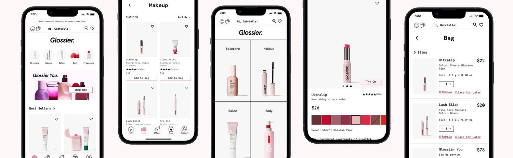
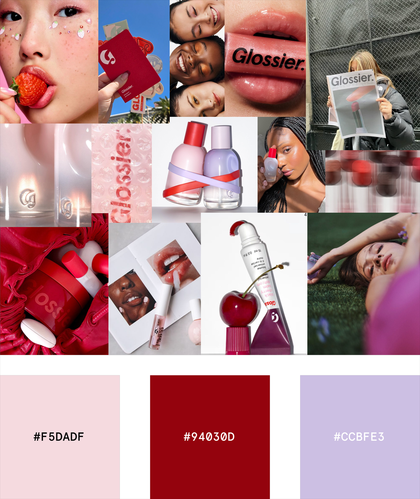
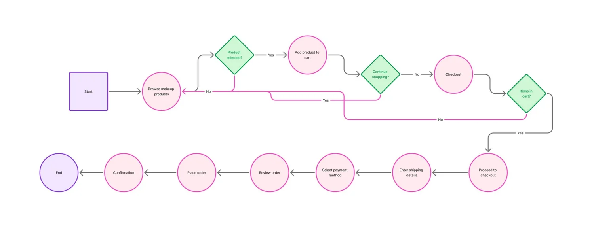
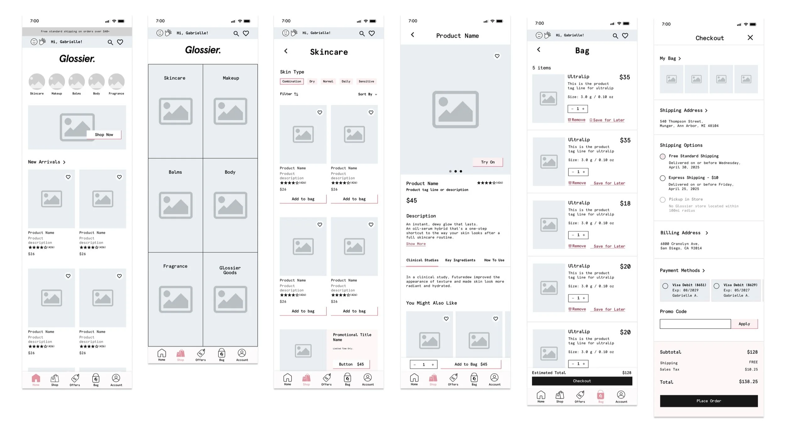
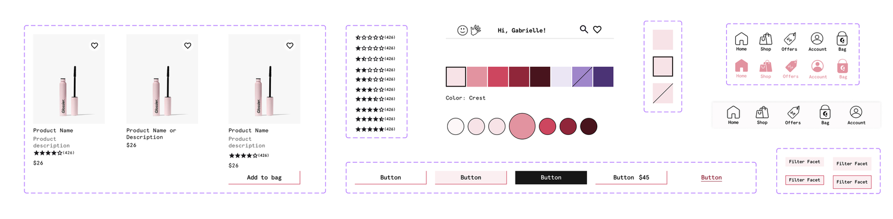
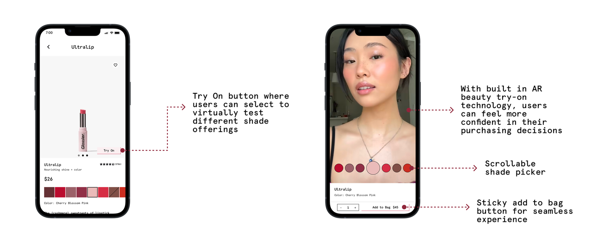

Glossier App

Glossier is a modern beauty brand that has gained widespread recognition for its minimalist approach to skincare and makeup. Founded in 2014, Glossier quickly became known for its direct-to-consumer model, utilizing social media and online communities to engage with customers. Its product offerings range from skincare essentials to makeup products, with an emphasis on enhancing natural beauty. The brand’s focus on inclusivity, user-generated content, and fostering a loyal online community has solidified its position as a standout in the beauty industry.
Problem Statement
How might we design a mobile app for Glossier that deepens community engagement, enhances the shopping experience, and stays true to the brand’s values of inclusivity, simplicity, and digital-first connection?
Why would Glossier benefit from an app experience?
- Enhanced Customer Engagement: A mobile app allows for more personalized interactions with Glossier's customers. Through features such as push notifications, loyalty program, and exclusive in-app content, Glossier can keep its community engaged and informed about new products, promotions, and brand events.
- Streamlined Shopping Experience: A mobile app would streamline the shopping process by offering a faster and more intuitive platform for purchasing products.
- Access to Exclusive Features: Glossier could use the app to offer exclusive content and products to app users, creating a sense of exclusivity that would incentivize app downloads.
- Data Insights for Better Personalization: A mobile app would allow Glossier to collect valuable data on user behavior and preferences. This data could be used to personalize product recommendations, improve marketing strategies, and create a more tailored experience for each user. With a deeper understanding of their customers, Glossier could refine its product offerings and deliver more targeted content.
User Personas
Two personas were created – Chloe Love and Amarie Davis – to outline the behaviors, frustrations, and needs of the Glossier customer when it comes to a makeup/beauty app experience.
Design Process
Mood Board
Glossier has one main shade – its famous pink. To pull other colors for their app, I created a mood board based off of photos from their social media or previous product campaigns.

Typography
User Flow
I created a user flow to map out the customer journey of Glossier’s new mobile application from browse to checkout.

Wireframes
Low-Fi Wireframes

Component Library
Creating wireframes not only helped me visualize what the app would look like, but it helped me determine what components I wanted to create and add to the design library. While creating the different components, I made sure to stay true to Glossier’s current brand identity.

Feature Highlight
Glossier AR Try-On technology

Prototype
Future Iterations
Designing out what the offers and rewards page would look like. In the future this would be considered a big value prop for customers and allow opportunity to introduce what a rewards system would look like for Glossier.
Learnings & Takeaways
Through this project I challenged myself to create my own responsive design system from scratch. I learned how to integrate variables and tokens, and apply them across my designs.
Furthermore, while working on these designs I was able to refine my auto layout and prototyping skills, which made me more confident as a designer.